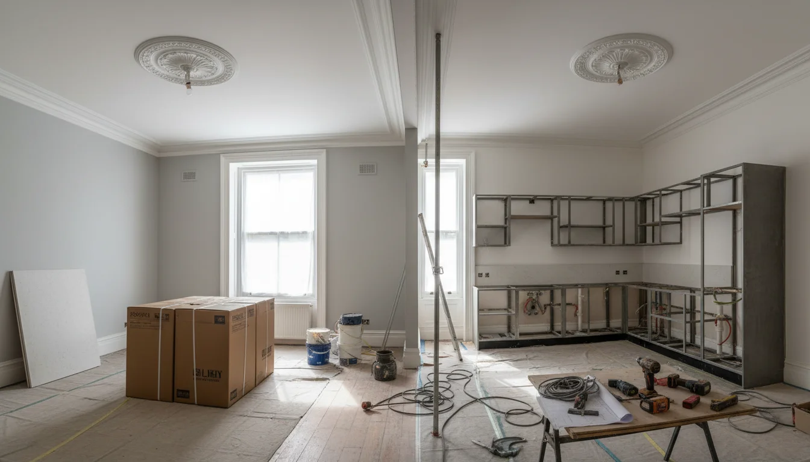
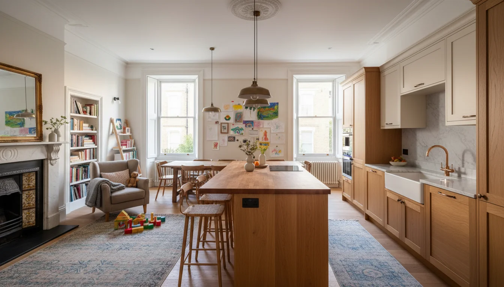

על השרות
אתם חושבים על נכס בלונדון. אולי אתם עוד בשלב החיפוש, אולי כבר חתמתם ועכשיו צריכים להבין מה הלאה. ככה או ככה - יש תהליך, ואני מלווה אותו מתחילתו ועד סופו.
אני עובדת בלונדון יותר מעשרים שנה. אדריכלית, מעצבת פנים, ומנהלת פרויקטים בשכונות שישראלים קונים בהן - סנט ג׳ונס ווד, סאות׳ קנזינגטון, המפסטד, מרילבון, גולדרס גרין. את רוב מה שכתוב כאן למדתי בשטח, לא מספרים.
התהליך - שלב אחרי שלב

כל פרויקט עובר דרך אותם שלבים. לפעמים מתחילים עוד לפני הרכישה, לפעמים אחרי. אבל הסדר הזה לא משתנה - ודילוג עולה כסף וזמן:
| שלב | משך | מה קורה |
|---|---|---|
| שיחה ראשונה | חצי שעה - שעה | הבנת צרכים, תקציב, אורח חיים |
| בדיקת נכס וייעוץ | לפי הצורך | סיורים, הערכת מצב, עלויות שיפוץ צפויות |
| סקר מבנה ותכנון | 2-4 שבועות | מדידות, תוכניות, הדמיות, בדיקת lease |
| אישורים | 2-4 חודשים | Licence to Alter, planning, party wall |
| מכרז קבלנים | 2-4 שבועות | הצעות מחיר, השוואה, בחירה |
| ביצוע | 3-6 חודשים | שיפוץ, ביקורי אתר שבועיים, דיווח |
| עיצוב וסטיילינג | 2-4 שבועות | ריהוט, תאורה, טקסטיל, אמנות |
| snagging ומסירה | 2-3 שבועות | בדיקת פגמים, תיקונים, מסירת מפתח |
כל פרויקט שונה. הטבלה מבוססת על ניסיון של עשרות פרויקטים בלונדון.
שיחה ראשונה. בדרך כלל שיחת וידאו. אני רוצה להבין מה קניתם (או מה אתם מחפשים), מה המשפחה צריכה, מה התקציב, ומה החלום. לא "מה הסגנון שלכם" - מה החיים שלכם. איך אתם משתמשים בבית. כמה זמן בשנה אתם בלונדון. מה הגיל של הילדים ומה הם צריכים. האם יש סבתא שבאה לבקר. האם יש אירוח חברים. חצי שעה עד שעה, בלי התחייבות.
בדיקת נכס וייעוץ. עוד לפני שחתמתם - אפשר לבוא איתי לסיור בנכס. אני בודקת מצב פיזי, מעריכה עלויות שיפוץ, בודקת מה ה- lease מאפשר ומה לא. מה לבדוק לפני שחותמים - מדריך מפורט. לפעמים הביקור הזה חוסך רכישה שהיתה הופכת לכאב ראש.
סקר מבנה ותכנון. מגיעים לדירה, מודדים, מצלמים, בודקים את ה- lease, בודקים מה אפשר ומה לא. אם הדירה ב- leasehold - ורוב הדירות בלונדון הן כאלה - יש דברים שצריך לברר מול ה- freeholder לפני שמתכננים. מוציאים תוכניות ראשוניות, הדמיות תלת-ממד, לוח חומרים - אתם רואים את הדירה העתידית במסך לפני ששוברים קיר אחד. הרקע שלי באדריכלות עוזר פה - אני רואה את הפרופורציות, את האור הטבעי, מבינה מה קיר נושא ומה לא, ויודעת מראש מה building control יגיד.
אישורים. Licence to Alter מהנהלת הבניין, planning permission אם צריך, party wall notices אם נוגעים בקירות משותפים. השלב הזה לוקח זמן - חודשיים לפחות, לפעמים ארבעה. בלונדון, לא מזיזים קיר בלי שלושה מסמכים. ככה זה פה.
מכרז קבלנים. יוצאים עם תוכניות מפורטות לשלושה קבלנים לפחות. משווים הצעות מחיר - וזה לא פשוט כמו שזה נשמע. הזול לא תמיד הזול. אני עובדת עם קבלנים שאני מכירה שנים, ויודעת מי אמין ומי לא.
ביצוע. הקבלן עובד. אני מבקרת באתר פעם בשבוע, בודקת התקדמות, פותרת בעיות, ומדווחת לכם. שיפוץ דירה ממוצעת בלונדון לוקח שלושה עד שישה חודשים, תלוי בהיקף. עם שינויים מבניים ו- planning permission, יכול להגיע לשמונה חודשים ויותר.
בשלב הזה, התפקיד שלי הוא להיות שם כשאתם לא. לבדוק שהאריחים שהותקנו הם האריחים שבחרתם. שהקבלן לא "פירש" את המפרט בדרך שלו. שהצבע על הקיר הוא מה שאישרתם ולא "משהו קרוב." כשאתם יושבים בישראל, אין לכם את הפריבילגיה להיכנס לדירה ולראות. אני העיניים שלכם.
עיצוב וסטיילינג. ריהוט, תאורה, טקסטיל, אמנות. הכל נבחר ונרכש, ומגיע לדירה ביום המסירה. אני רוצה שתיכנסו לדירה מוכנה - לא לדירה שצריך עוד חודש של ריצה בחנויות. הדירה צריכה לעבוד לזוג שמגיע לסופשבוע וגם למשפחה שלמה לשלושה שבועות באוגוסט - מטבח שמכיל שמונה אנשים, חדר ילדים שעובד גם כחדר אורחים, פתרונות אחסון רציניים.
snagging ומסירה. רשימת פגמים - צבע לא אחיד, ידית עקומה, רווח בפנל. זה בדיקה מדוקדקת של כל פריט, כל משטח, כל חיבור. עוקבים עד שכל פריט מתוקן. Practical completion הוא לא סוף הסיפור, זה תחילת השלב האחרון. בלי מישהו שעוקב אחרי ה- snagging list, קבלנים "שוכחים" פריטים. עם מישהי שנמצאת על זה - הכל מסתדר.
תרגום בין עולמות
זה לא עניין של שפה. זה עניין של תרגום תרבותי.
ישראלים מדברים ישירות. אומרים מה רוצים ומצפים שזה יקרה. בריטים עובדים עם תהליכים, מסמכים, וגבולות. כשישראלי אומר לקבלן בריטי "דיברנו על זה, אז תעשה," הקבלן שומע אמירה לא מחייבת כי אין מסמך כתוב. כשקבלן בריטי אומר "I'll do my best," הוא בעצם אומר שזה כנראה לא יקרה.
אני מתרגמת את ה"דיברנו" למייל מסודר עם מפרט. מתרגמת את ה"I'll do my best" ל"הוא אומר שזה בעייתי, בואו נחשוב על פתרון." הגישור הזה חוסך כסף, חוסך זמן, ומונע מצבים שהופכים לבעיות משפטיות.
ויש עוד דבר. ישראלים ובריטים חושבים אחרת על בית. ישראלים רגילים לחללים פתוחים, אור טבעי חזק, מטבח שהוא מרכז הבית. בריטים רגילים לחדרים נפרדים, אור רך, סלון שהוא "reception room." אני יודעת לקחת דירה לונדונית ולגרום לה להרגיש נכון למשפחה ישראלית - בלי לאבד את האופי הלונדוני שבגללו קניתם אותה מלכתחילה.
period features, פרופורציות ויקטוריאניות, האור הלונדוני - אלה נכסים, לא מכשולים. הרבה ישראלים מגיעים עם אינסטינקט לפרק הכל ולבנות מאפס. לפעמים זה נכון. אבל לפעמים - וזה קורה הרבה בבניינים ויקטוריאניים - ה- period features הם מה שעושה את הדירה לדירה. רוזטה בתקרה, sash windows, קרניזים מקוריים. צריך לדעת מתי לשמר ומתי לחדש.
ניהול מרחוק - איך זה עובד מישראל
רוב הלקוחות הישראלים שלי יושבים בישראל. לא באותו אזור זמן, לא באותה מדינה. וזה עובד. לא כי "הטכנולוגיה מאפשרת" - כי יש שיטה ברורה שהוכיחה את עצמה בעשרות פרויקטים.
סיור אתר שבועי. אני מגיעה לדירה, מצלמת סרטונים ותמונות, בודקת מול התוכניות, ומדברת עם הקבלן פנים אל פנים. אחרי הסיור - שיחת וידאו אתכם. סיכום של מה קרה, מה ההחלטות שצריך, ומה נתקע.
החלטות מהירות דרך WhatsApp.
תיקיות משותפות עם הכל. תוכניות, הדמיות, מפרטים, תמונות מהאתר, הצעות מחיר, חשבוניות. הכל בענן, תמיד מעודכן. שקיפות מלאה.
הפרש שעות קטן. ישראל מקדימה את לונדון בשעתיים. בבוקר בישראל יש לכם כבר תמונות מסיור האתר של אתמול. אפשר לדבר בשעות עבודה רגילות. זה לא הפרש כמו עם ניו יורק או סידני.
ניהול שיפוץ מרחוק ארחיב על איך כל זה עובד בפועל - הצוות שצריך, מה יכול להשתבש, ואיך מונעים את זה.
הניסיון שעושה את ההבדל

יותר מעשרים שנה בלונדון. עשרות פרויקטים. הסטודיו שלי הוקם אחרי לימודי אדריכלות ועבודה במשרדי עיצוב ואדריכלות שונים. השילוב הזה - אדריכלות, עיצוב פנים, וניהול פרויקטים - נותן לי פרספקטיבה שונה.
בסנט ג׳ונס ווד ניהלתי פרויקט פנטהאוז באזור לשימור. ב- סאות׳ קנזינגטון ליוויתי בית Mews משלב הרכישה, שיפוץ והשכרה. ב- המסטד, גולדרס גרין, מזוול היל וב- איסט פינצ׳לי עבדתי על עשרות בתים ודירות למשפחות - הסבת עליות גג, הרחבת קומת קרקע, תכנון מטבחים גדולים, שיפוצים מלאים - בתים ישנים של 100 שנה לבתים חכמים מודרנים ומעוצבים עד הפרט האחרון.
כל פרויקט לימד משהו. למדתי ש- freeholder ב- Westminster עובד אחרת מ- freeholder ב- Camden. שקבלנים מסוימים מצוינים בעבודות מבנה אבל גרועים בגמרים. שיש ספקי ריהוט שנותנים שירות מעולה ויש כאלה שמספרים סיפורים. הרשת המקצועית הזו - קבלנים, אדריכלים, מהנדסים, ספקים, נגרים - נבנתה לאורך שנים וקשה להשיג אותה מגוגל.
הפורטפוליו שלי נמצא ב- tamarcreative.com - שם אפשר לראות פרויקטים מלאים עם תמונות, כולל פרויקטים בשכונות שישראלים קונים בהן.
שאלות ששואלים לפני שמתחילים
ליווי מלא - מתכנון דרך ניהול שיפוץ ועד סטיילינג - עולה בדרך כלל 10% מעלות הפרויקט הכוללת. זה כולל תכנון, ניהול קבלנים, ביקורי אתר, רכש, וליווי עד המסירה. מעבר לזה, יש עלויות נוספות שכדאי להכיר. שיחה ראשונה - ללא עלות.
תלוי בהיקף. שיפוץ קוסמטי של דירה קטנה - שלושה חודשים. שיפוץ מקיף עם שינויים מבניים - שישה עד שמונה חודשים. ולפני שמתחילים לעבוד, יש שלב אישורים של חודשיים עד ארבעה חודשים. תכננו מראש.
כן, וזה אפילו עדיף. אני יכולה ללוות אתכם בשלב הבדיקות לפני הרכישה - לבדוק את מצב הנכס, להעריך עלויות שיפוץ, ולהגיד לכם מה ריאלי ומה לא. ככה לא תגלו אחרי הרכישה שמה שתכננתם בלתי אפשרי.
כן. רוב הלקוחות הישראלים שלי עובדים ככה. סיורי אתר שבועיים, שיחות וידאו, WhatsApp להחלטות מהירות. הדירה מוכנה כשאתם מגיעים.
אני מתמחה באזורים שישראלים קונים בהם בדרך כלל - סנט ג׳ונס ווד, המפסטד, בלסייז פארק, מרילבון, פרימרוז היל, ועוד. כל אזור יש לו אופי משלו - ורגולציה משלו.
- התהליך: שיחה ראשונה, בדיקת נכס, תכנון, אישורים, מכרז, ביצוע, עיצוב, מסירה. כל שלב מנוהל
- ליווי מלא עולה 10% מעלות הפרויקט. שיחה ראשונה - בלי עלות
- לוח זמנים: 2-4 שבועות תכנון, 2-4 חודשים אישורים, 3-8 חודשים ביצוע
- ניהול מרחוק עובד: סיור אתר שבועי, WhatsApp להחלטות, הפרש שעות קטן מישראל
- עברית לא רק שפה - זה תרגום תרבותי בין ישראלים לבריטים
קונים דירה בלונדון ורוצים לדעת מה הצעד הבא? דברו איתי. שיחה ראשונה בעברית, בלי התחייבות.